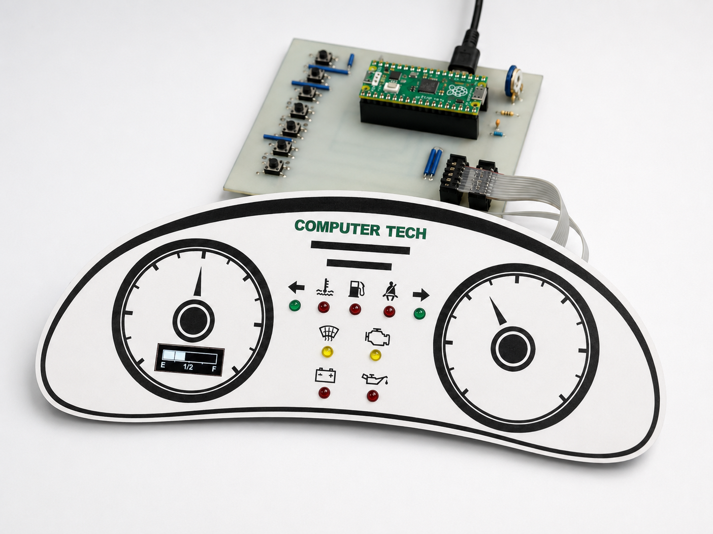
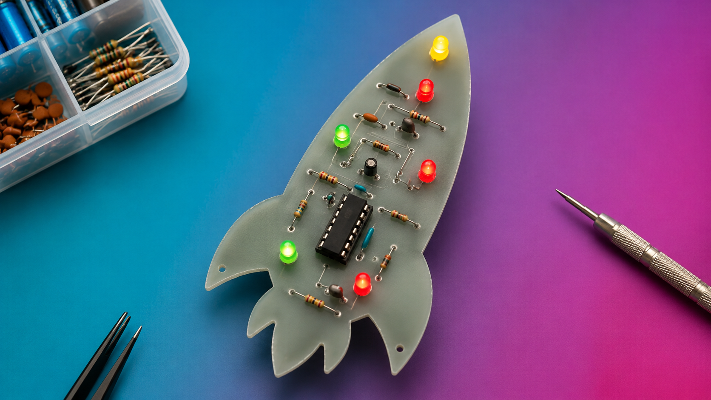

Curious Learner
I ask questions, explore unfamiliar tools, and use each project as a way to build stronger technical understanding.
Mechatronics Engineering Portfolio
Mechatronics Engineering student designing and building real-world robotic and embedded systems through programming, electronics, and mechanical design. Seeking 2027 co-op opportunities in software, robotics, embedded systems, and automation.


About Me
For me, engineering has never been just about building. It has been about understanding how systems work, why they behave the way they do, and how separate pieces can come together to solve a real problem. Whether I’m designing, programming, troubleshooting, or testing, I enjoy the process of turning curiosity into something practical.

This portfolio is the story of that journey. It reflects the questions that sparked my projects, the challenges that shaped them, and the lessons I gained from building them. As I continue studying Mechatronics Engineering, I’m building a foundation across software, electronics, and mechanical systems while growing towards robotics, automation, and a future career as an AI and machine learning engineer. This portfolio serves as a record of that growth — one project, one lesson, and one question at a time.
I ask questions, explore unfamiliar tools, and use each project as a way to build stronger technical understanding.
I enjoy working through uncertainty, testing different approaches, and improving solutions when things do not work the first time.
I value clear communication, thoughtful questions, and learning from others while working toward a shared technical goal.
Featured Work
Each project is presented as a case study, following the process from initial idea to final build and highlighting the decisions, challenges, and improvements along the way.

Robotics • Embedded Systems
A Raspberry Pi–based mobile robot that uses sensor feedback and PID control for line tracking, with additional testing for turning response and boundary detection.
View Case StudyMore hands-on builds, software projects, and technical explorations.

Robotics • Mechanical Design
A VEX-based sorting robot that combines touch input, colour detection, distance sensing, and a motorized claw-lift mechanism.
View Case Study
Software • Game Development
A Python/Pygame fantasy maze game built with procedural generation, AI-driven fox behaviour, interactive mini-games, reward-based progression, and custom UI transitions.
View Case Study
Embedded Systems • PCB Fabrication
A Raspberry Pi Pico-based dashboard with Python-controlled LEDs, button inputs, a potentiometer-controlled OLED fuel display, and a temperature-sensitive warning indicator.
View Case Study
Hardware • PCB Fabrication
A focused hardware build where I fabricated two small copper-board PCBs from start to finish, including trace transfer, etching, drilling, soldering, continuity checks, and powered LED testing.
View Mini BuildExperience
A look at the technical work environments, co-op placements, and professional experiences that are shaping how I learn, communicate, and grow as an engineer.
May 2026 – August 2026
Phoenix Contact • Automation & Power Reliability
Supporting automation-focused technical work involving programmable logic controllers, human-machine interfaces, remote I/O, industrial networking equipment, demonstration systems, electrical documentation, testing, and troubleshooting.